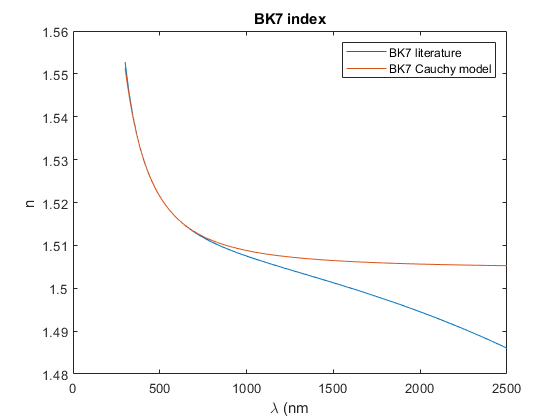
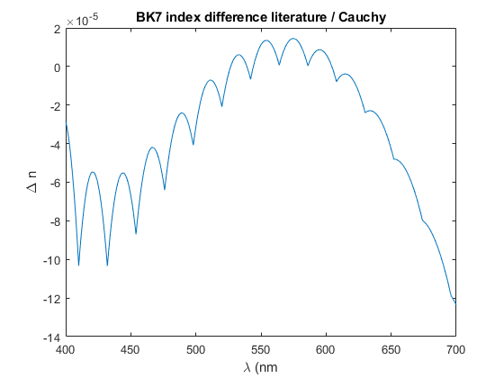

CauchyFromAbbe
Navigate to: Home | Alphabetic list | Grouped list | Source code: CauchyFromAbbe.m
Computes the first two Cauchy dispersion coefficients from index and Abbe number
Contents
Syntax
function rv = CauchyFromAbbe(n, v, opts)
Input Arguments
- nd: scalar double. Refractive index at lambda_d = 587.56 nm
- vd: scalar double. Abbe number, (nd-1) / (nF-nC)
- opts: Optional name-value pairs:
| Name | Type | Value | Default | Meaning |
| 'lambda_n_nm' | real or char | real > 0, 'd' , 'D', 'e' | 'd' | reference wavelength for index n in nanometers |
| 'lambda_v_nm' | real or char | real > 0, 'd' , 'D', 'e' | 'd' | reference wavelength for Abbe number v in nanometers |
| 'Cauchy_wlu' | real | real > 0 | 1e-6 | wavelength unit for Cauchy A1. Default 1e-6 (microns). Use 1e-9 for nanometer |
| 'lam' | real vector | valid wavelength array in nm | NaN | When present, rv contains field nSpectrum: a spectrum which is the Cauchy model evaluated over lam |
Output Arguments
rv is a struct with fields * A0 and A1: both scalar double, the two Cauchy coefficients. A0 is dimensionless, A1 has unit Cauchy_wlu^2, which defaults to µm^2. * CauchyFunc: An anonymous function handle to a function with signature n = func(lam). Evaluates the index as function of lam in nanometers, relieving the user from worrying about wavelength unit conversion when adhering to the "all wavelengths are nanometers" convention. * nSpectrum: A spectrum, i.e. a struct with fields lam and val, where lam is a copy of the 'lam' optional argument in nanometers, and val is the refractive index evaluated over this array.
Algorithm
The Cauchy dispersion model assumes n = A0 + A1/lambda^2 + A2/lambda^4 + ... When only index nD and Abbe number are given, only A0 and A1 can be computed. See docCauchyFromAbbe for details.
See also
Usage Example
function ExampleCauchyFromAbbe() % nd = 1.5168; vd = 64.17; % see if nd and vd are correctly reproduced cc = CauchyFromAbbe(nd, vd); test_nd = cc.CauchyFunc(587.5618); fprintf('BK7 example\ngiven nd = %g, computed nd = %g, difference = %g\n',nd, test_nd, test_nd - nd); [test_nFnC] = cc.CauchyFunc([486.134,656.281]); % evaluate on array test_v = (test_nd - 1) / (test_nFnC(1) - test_nFnC(2)); fprintf('given vd = %g, computed vd = %g, difference = %g\n',vd, test_v, test_v - vd); % see if A1 is correct if Cauchy model uses nm instead of µm ccnm = CauchyFromAbbe(nd, vd,'Cauchy_wlu',1e-9); fprintf('micron A1 = %g, nm A1 = %g, ratio = %g, should be (µm/nm)^2 = 1e6\n',cc.A1, ccnm.A1, ccnm.A1 / cc.A1); % see what happens if D line is used for n nD = 1.5167; ccD = CauchyFromAbbe(nD, vd,'lambda_n_nm','D'); ccD2 = CauchyFromAbbe(nD, vd,'lambda_n_nm',589.29); fprintf('test A0/A1 difference for ''D'' vs. 589.29 nm, dA0 = %g, dA1 = %g\n',ccD.A0 - ccD2.A0,ccD.A1 - ccD2.A1); % plot BK7 dispersion curve tabulated = readmatrix('Examples/NBK7.csv','NumHeaderLines',1); useable = ~isnan(tabulated(:,2)); BK7.lam = tabulated(useable,1) * 1000; BK7.val = tabulated(useable,2); cc2 = CauchyFromAbbe(nd, vd,'lam',min(BK7.lam):max(BK7.lam)); figure(); clf; plot(BK7.lam,BK7.val); hold on; plot(cc2.nSpectrum.lam, cc2.nSpectrum.val); legend({'BK7 literature','BK7 Cauchy model'}); xlabel('\lambda (nm'); ylabel('n'); title('BK7 index') fprintf('good coincidence in the visible range, large difference outside'); figure(); ndiff = AddWeightedSpectra({BK7,cc2.nSpectrum},[1,-1]); ndiff = ResampleSpectrum(ndiff,400:700); plot(ndiff.lam, ndiff.val); xlabel('\lambda (nm'); ylabel('\Delta n'); title('BK7 index difference literature / Cauchy') end
BK7 example given nd = 1.5168, computed nd = 1.5168, difference = 0 given vd = 64.17, computed vd = 64.17, difference = -1.16529e-12 micron A1 = 0.00421729, nm A1 = 4217.29, ratio = 1e+06, should be (µm/nm)^2 = 1e6 test A0/A1 difference for 'D' vs. 589.29 nm, dA0 = 0, dA1 = 0 good coincidence in the visible range, large difference outside 